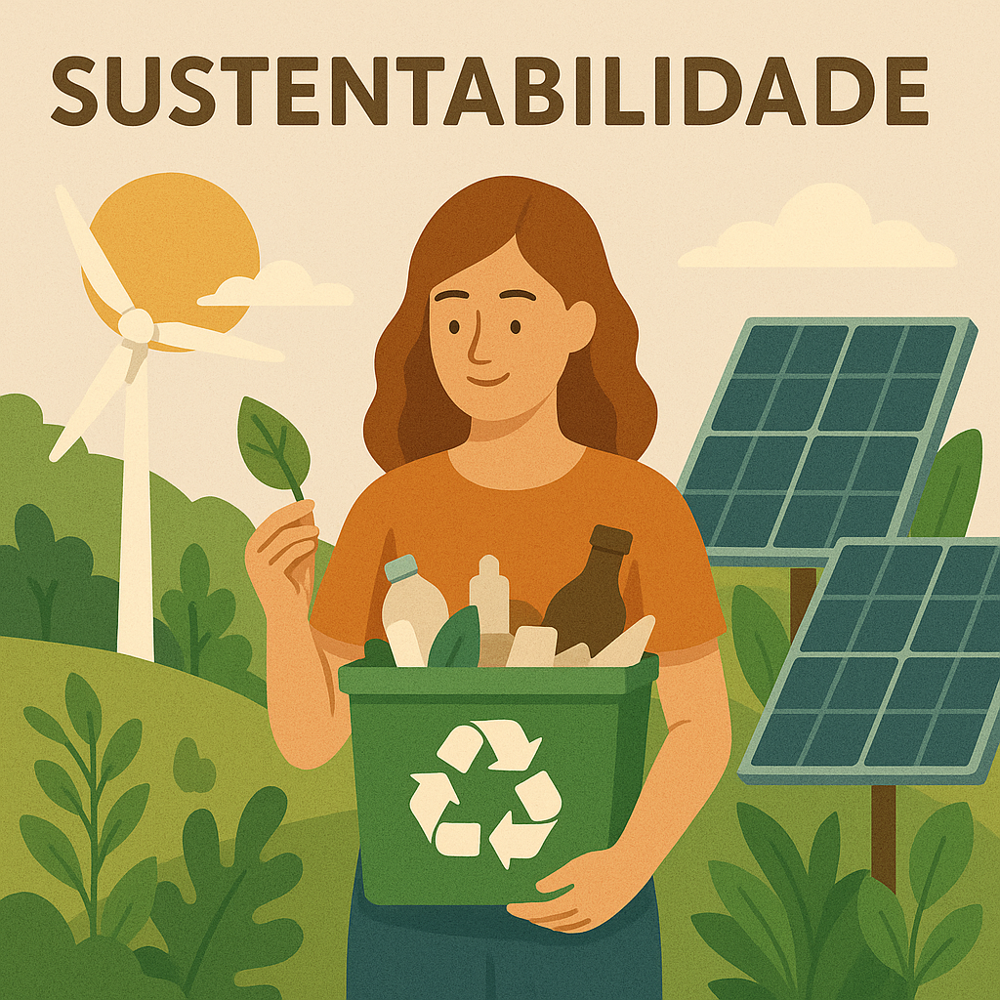

O Ciclo da Sustentabilidade
Cidades e áreas rurais são interdependentes. Enquanto as cidades consomem 75% dos recursos naturais, o campo é responsável por sua produção e conservação.
Pilares da Conexão Sustentável
- Produção e consumo locais
- Gestão compartilhada de recursos hídricos
- Energias renováveis descentralizadas
- Mobilidade sustentável entre campo e cidade

Iniciativas de Sucesso
Compostagem Urbana
Transformação de resíduos orgânicos urbanos em adubo para áreas rurais.
Energias Renováveis
Parcerias para geração de energia limpa em propriedades rurais para abastecer cidades.
Circuitos Curtos
Venda direta de produtores rurais para consumidores urbanos, reduzindo intermediários.
Impacto Ambiental
Projetos de conexão urbano-rural podem reduzir em até 40% as emissões de carbono relacionadas à produção e transporte de alimentos.